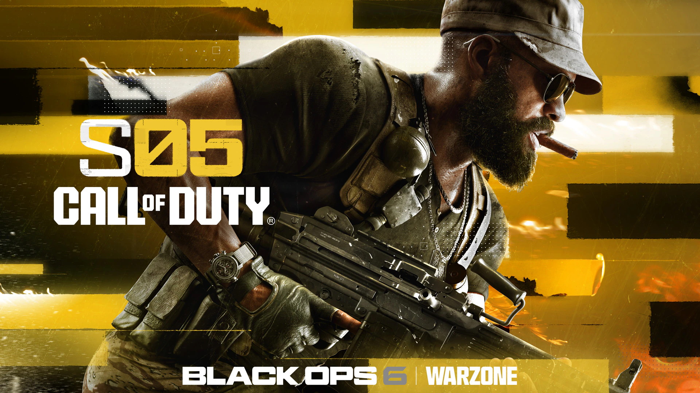

Call of Duty: Black Ops 6 – Temporada 5: Novos Mapas e Modos para Explorar
A Temporada 5 de Call of Duty: Black Ops 6 chega com novidades empolgantes para os fãs da franquia. A partir de 7 de agosto, três novos mapas estarão disponíveis, cada um oferecendo desafios e estratégias únicas para os jogadores.
🗺️ Exchange – Combate Urbano Intenso
Exchange é um mapa compacto ambientado em um mercado urbano. Com três rotas principais, é ideal para partidas rápidas de 2v2 e 6v6. A chave para o sucesso aqui é a movimentação estratégica e o uso inteligente do ambiente. Leia mais
✈️ Runaway – Ação no Aeroporto Abandonado
Runaway leva os jogadores a um aeroporto parcialmente destruído, onde a equipe Black Ops persegue agentes fugitivos entre aeronaves abandonadas e terminais em colapso. O layout irregular exige atenção aos detalhes e movimentação estratégica. Leia mais
🏭 World Motor Dynasty (W.M.D.) – O Retorno do Clássico
W.M.D. é um mapa clássico da série, agora ambientado em uma fábrica de carros de luxo. Com melhorias visuais e equilíbrio entre combates internos e externos, oferece uma experiência dinâmica para os jogadores. Leia mais
🎮 Novos Modos e Conteúdo
Além dos mapas, a Temporada 5 traz novos modos de jogo e conteúdos adicionais:
- Modos Inéditos: Na Cachola, Só Snipers e Moshpit no Máximo.
- Mid-Season Update: Cranked Demolition e Blueprint Gunfight.
- Nova Série de Pontuação: Arco de Combate, que lança flechas explosivas.
🧟 Encerramento da Campanha de Zumbis
A Temporada 5 marca o fim da atual narrativa do modo Zumbis, com a estreia do mapa Reckoning, ambientado na região dos Apalaches. O conflito entre Richtofen e S.A.M. atinge seu ápice, enquanto os jogadores enfrentam novos desafios. Leia mais